The Signal State Machine is the core execution logic of the backtest-kit framework. It governs the lifecycle of a trading instruction from its initial generation by a strategy to its final settlement. The state machine ensures logical consistency, prevents overlapping trades for the same symbol-strategy pair, and handles precise PNL calculations including slippage and exchange fees.
A signal progresses through six distinct states. Transitions are strictly controlled to maintain the integrity of the trading simulation and live execution.
The following diagram illustrates the flow between states and the triggers for each transition.
Title: Signal State Transitions

The baseline state where no active signal exists for a specific symbol-strategy pair. The framework calls the strategy's getSignal() function during this state.
A pending state where a signal waits for the market price to reach a specific priceOpen (limit order behavior).
currentPrice <= priceOpen.currentPrice >= priceOpen.CC_SCHEDULE_AWAIT_MINUTES (default 60), it transitions to CANCELLED.An intermediate state triggered the moment entry conditions are met. It serves as a hook for logging and notifications before the position becomes "Active" for monitoring.
The position is live and being monitored for exit conditions every tick.
currentPrice >= priceTakeProfit (Long) or <= priceTakeProfit (Short).currentPrice <= priceStopLoss (Long) or >= priceStopLoss (Short).currentTime - pendingAt > minuteEstimatedTime.A terminal state reached after an exit condition is met. The framework calculates the final PNL at this stage.
A terminal state for SCHEDULED signals that failed to trigger because the price hit the Stop-Loss first or the entry timeout expired.
The state machine calculates PNL by adjusting raw entry and exit prices to account for market impact (slippage) and exchange commissions.
| Parameter | Default Value | Description |
|---|---|---|
CC_PERCENT_SLIPPAGE |
0.1% | Market impact for entry/exit |
CC_PERCENT_FEE |
0.1% | Exchange trading commission |
Calculation Logic (Long Position):
priceOpen * (1 + slippage) * (1 + fee)priceClose * (1 - slippage) * (1 - fee)((Adjusted Exit - Adjusted Entry) / Adjusted Entry) * 100Before a signal can transition from IDLE to SCHEDULED or OPENED, it must pass a multi-stage validation engine to ensure logical consistency and risk compliance.
The system validates that the signal parameters make sense relative to the current market price.
Title: Signal Validation Logic (Code Entity Space)

Validation Rules:
priceTakeProfit must be > priceOpen, and priceStopLoss must be < priceOpen.priceOpen and priceTakeProfit must be greater than the total trading costs (~0.4%) to ensure the trade can actually result in a net profit.maxConcurrentPositions and symbol-specific blacklists via the addRisk() registry.minuteEstimatedTime)The minuteEstimatedTime parameter acts as a "time-based stop-loss." It prevents capital from being locked in stagnant trades.
OPENED, a pendingAt timestamp is recorded.ACTIVE tick, the engine checks:
isExpired = (currentTimestamp - pendingAt) > (minuteEstimatedTime * 60 * 1000)true, the position is closed with the reason "time_expired", and the PNL is settled at the current market price.